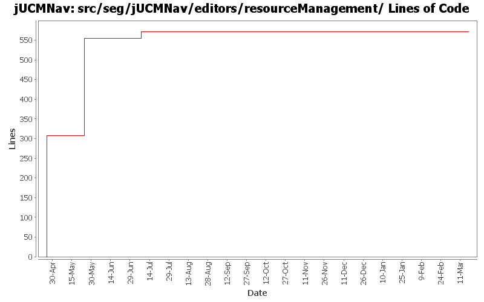

Summary Period: 2005-04-25 to 2006-03-17
[root]/src/seg/jUCMNav/editors/resourceManagement

Total Lines Of Code:
571 (2006-03-31 18:01)
| Author | Changes | Lines of Code | Lines per Change |
|---|---|---|---|
| Totals | 32 (100.0%) | 571 (100.0%) | 17.8 |
| etremblay | 4 (12.5%) | 307 (53.8%) | 76.7 |
| jkealey | 23 (71.9%) | 264 (46.2%) | 11.4 |
| jpdaigle | 1 (3.1%) | 0 (0.0%) | 0.0 |
| jfroy | 4 (12.5%) | 0 (0.0%) | 0.0 |
Fix bug 412 (default strategy and strategies group).
Removed redundant code for the creation of a new file (using jUCMNavLoader and ModelCreationFactory instead of static xml).
0 lines of code changed in:
changed a few places where we work with progress monitors after reading article on eclipse.org
0 lines of code changed in:
Merge of GRL branch with the main trunk
0 lines of code changed in:
Extracted a bunch of strings, translated language files to French.
0 lines of code changed in:
Fix references to RessourceTrackers and fix the problem with the new editor option (in Eclipse 3.1)
0 lines of code changed in:
bug 359 - mode now affects all editors;
undiscovered regression bug - stub labels sometimes didn't move;
cleaned&commented (javadoc) seg.jUCMNav.editparts;
moved remaining stub code from PathNodeEditPart to StubEditPart;
moved remaiining condition code form LabelEditPart to ConditionEditPart
0 lines of code changed in:
added javadoc for seg.jUCMNav.editors and seg.jUCMNav.editors.resourceManagement. Moved outline to seg.jUCMNav.views.outline package.
17 lines of code changed in:
bug 335: palette wording
bug 344: extracted more strings
0 lines of code changed in:
save as was no longer working for some files; fixed file open error message so that it doesn't appear if the file is blank (files created using the file - new - simple file instead of the wizard)
0 lines of code changed in:
bug 316 - post error when load fails.
0 lines of code changed in:
JP: Mega commit! Fixed all 120 javadoc warnings on public members, and made the build script a tiny bit less verbose.
Added meaningful javadoc location where possible.
0 lines of code changed in:
bug 303 - rename a file when editor is opened. now saves, closes and reopens to insure file manager is updated properly.
0 lines of code changed in:
bug 300 - componentref binding bugs; upgrade test suite, found many new bug locations, fixed them all. please write test cases for all new commands.
0 lines of code changed in:
xmi now saved with ISO-8859-1 (latin 1)
0 lines of code changed in:
Internationalization of all the strings.
0 lines of code changed in:
bug 230 - now settings urnspec fields
0 lines of code changed in:
Bug 223 - Refactored UCMNavMultiPageEditor, commented editors package except the palette.
New files that I recommend you take a look at if you've worked with UCMNavMultiPageEditor before: ActionRegistryManager, MultiPageTabManager, MultiPageFileManager
247 lines of code changed in:
bug 181: labels now show name of responsibility instead of respref.
onload, any unlinked reference will have defintiions created.
need to update propertysource so that it behaves properly.
0 lines of code changed in:
bug 225: now sanitizes the URNspec when loaded. resolves any naming conflicts or duplicate IDs.
labels no longer set any names
now need to ensure that modelcreationfactory generates IDs/names that don't conflict (not just the next time you open the file)
0 lines of code changed in:
bug 225: first draft at naming/identifying model elements. currently chokes on old files. doesn't check to see if names are unique; doesn't perform sanity check at start.
0 lines of code changed in:
(3 more)
Generated by StatCVS 0.2.4